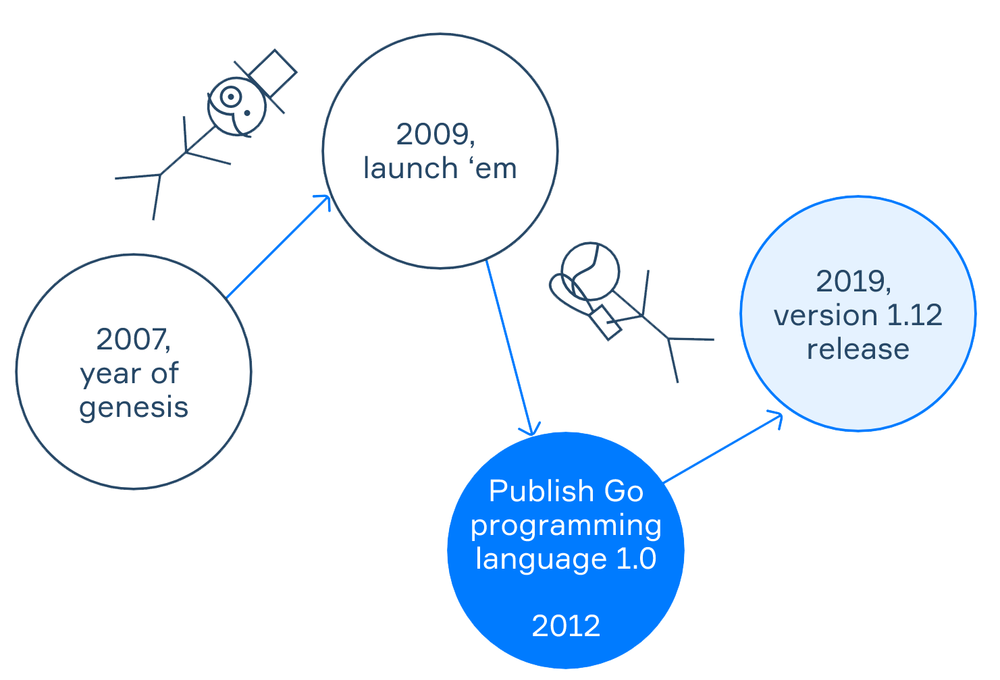
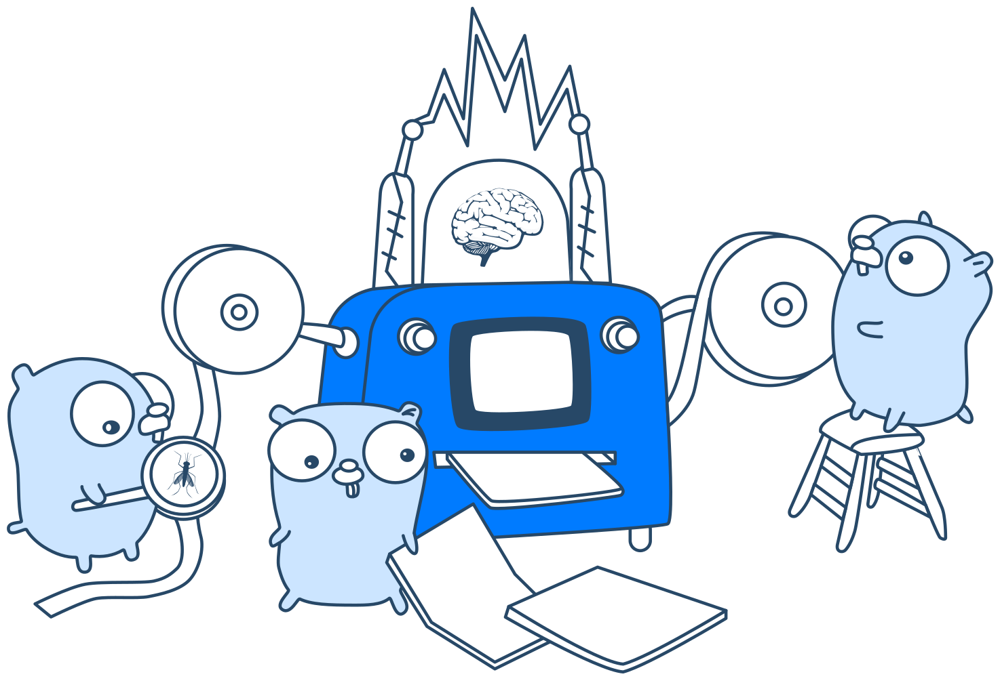
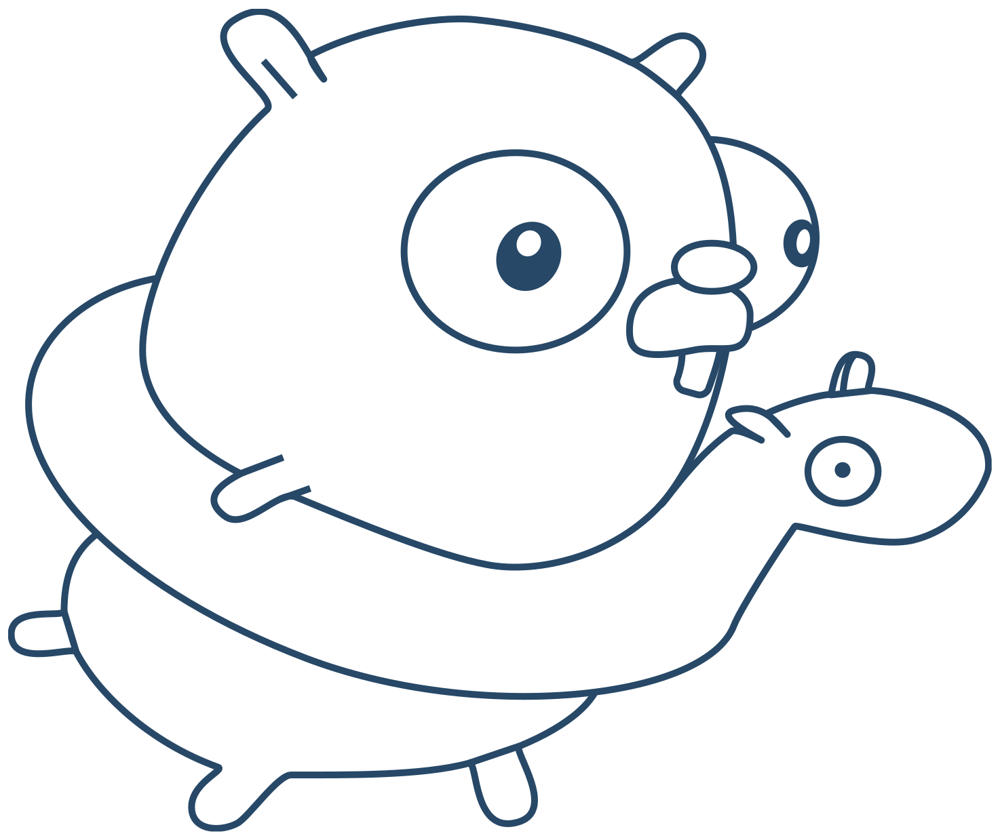

Введення в мову Go (Golang)
Теорія
Основним інструментом інформатики є мови програмування. Ми використовуємо їх для розробки комп’ютерних програм. У сучасному світі існує велика різноманітність мов програмування, кожна з яких має свою спільноту шанувальників. Давайте дізнаємося, що робить Go унікальним і що нам подобається в цій мові.
§1. Go - мова програмування?

Дуже коротка історія, якщо вам цікаво:
У 2007 році Google почав розробляти мову програмування Go як внутрішній проєкт. Два світила Unix, Роб Пайк і Кен Томпсон, розробили оригінал. Через два роки, 10 листопада 2009 року, програмне забезпечення було випущено за ліберальною ліцензією з відкритим кодом. Версія Go 1.0, яка була готова до виробництва, була випущена в березні 2012 року. Команда дизайнерів Google працювала над проєктом Go разом з Рассом Коксом, Ендрю Геррандом, Іаном Ленсом Тейлором та іншими. І завдяки всім цим людям ви отримали шанс вивчити цю мову програмування.
Go також називається Golang, так само, як і мова програмування Go; псевдонім «Golang» виник тому, що веб-сайт (go.dev) спочатку мав назву golang.org. У цій темі ми використовуватимемо обидві назви як взаємозамінні.
§2. Переваги Go
Go має чистий синтаксис. У таблиці нижче показано порівняння синтаксису між Go та Java під час оголошення та ініціалізації змінних.
Go
package main
func main() {
a, b, c := 1, 2, 3 // a, b, c have the 'int' type
}
Java
public class Main {
public static void main(String[] args) {
int a = 1, b = 2, c = 3;
}
}
Go — це прагматична мова: її основна мета — розв’язувати проблеми реального світу. Ви можете побачити це в наведених нижче прикладах:
- Початковим наміром Go було використання в сервероцентричному світі веб-серверів і архітектури сховищ. Таким чином прийшло рішення зробити Go мовою програмування, скомпільованою у рідний код. Програми Go зазвичай виконуються дуже швидко та займають мало пам’яті. Ось чому ви можете використовувати цю мову як мову системного програмування.
- Golang чудово справляється з масивним паралелізмом і полегшує обробку подій. Це робить його гарним вибором для ігрових серверів і рішень IoT. Іншим корисним посиланням, щоб дізнатися про успішні приклади в Go, є вікі Github.
- І нарешті, ви можете використовувати Go як загальну мову програмування. Це чудовий інструмент для розробки та розв’язання задач обробки тексту.
Зробіть паузу, щоб подивитися, як талісмани Go працюють у різних ролях.
Ця мова підтримує низку парадигм програмування, зокрема імперативне програмування, об’єктно-орієнтоване програмування, процедурне та функціональне програмування. Go FAQ містить пояснення цих дизайнів командою Go.
§3. Недоліки Go
Хоча Go має багато переваг перед іншими мовами програмування, вона все ж має деякі недоліки, про які слід пам’ятати під час вивчення:
- Стандартній бібліотеці Go бракує деяких функцій порівняно з іншими мовами. Наприклад, немає вбудованої функції для пошуку найбільшого числа в масиві чисел, тому вам доведеться реалізувати її вручну.
- Стандартна бібліотека Go не підтримує програмування GUI за замовчуванням, що є перевагою бібліотек інших мов програмування, таких як стандартна бібліотека Java.
- Окремі двійкові файли Go є великими, оскільки для них потрібен вбудований збирач сміття та повне середовище виконання Go. Розмір файлу програми «Hello World» може займати 2 МБ.
Суслики — це прості істоти.
§4. Перший приклад Go
Тепер, коли ви ознайомилися з мовою Go, ви можете виконати ці дії, щоб установити Go на свій комп’ютер.
Коли ви завершите встановлення Go, ми можемо поглянути на перший приклад коду. Він друкує рядок «Hello Golang» на термінал (припустимо, цей приклад міститься у файлі main.go):
Go Приклад
package main
import "fmt"
func main() {
fmt.Println("Hello Golang") // виводить на екран "Hello Golang"
}
Коли ми пишемо коментарі в Go, ми використовуємо стиль C++: // для однорядкових коментарів, які ми зазвичай розміщуємо в кінці рядка коду, і /* ... */ для багаторядкових коментарів.
Мова програмування Go організована в пакети, і кожна програма Go повинна мати пакет main, який містить main(), яка служить точкою входу для програми (функція, яка виконується першою).
Тепер натисніть кнопку запуску в JetBrains GoLand (або IntelliJ IDEA) або запустіть програму безпосередньо в терміналі, виконавши команду go run main.go.

Вітаю! Ви щойно скористалися Go вперше.
§5. Підсумок
Ось нагадування про те, що ми вже розглядали про мову Go:
- Короткий опис Go;
- Що він може робити;
- Причини, чому Golang такий популярний у комп’ютерному програмуванні;
- Вчимося писати простий код мовою Golang.
Коли ви зрозумієте найосновніші поняття Go, ви готові піти далі з дослідженням.
Ви також можете переглянути Урок на hyperskill.org.
Практичні завдання та відповіді
Подаються завдання та варіанти відповідей. Правильний варіант виділено синім кольором.
№1. Характеристики мови Go
Питання: Виберіть правильні твердження щодо характеристик мови Go.
Виберіть один або кілька варіантів зі списку:
- Її можна використовувати як загальну мову програмування ✔
- Підтримує багатопарадигмальне програмування ✔
- Вона має складний синтаксис, який важко читати
- Підтримує паралельне програмування ✔
Пояснення. Твердження про складний синтаксис, який важко читати, є неправильним. Go має відносно простий синтаксис, подібний до C і Java.
Ось деякі додаткові відомості про характеристики мови Go:
- Мова загального призначення: Go можна використовувати для розробки різноманітних програм, зокрема веб-програм, інструментів командного рядка та розподілених систем.
- Мультипарадигма: Go підтримує кілька парадигм програмування, зокрема процедурне, об’єктно-орієнтоване та функціональне програмування.
- Параллельність: Go має вбудовану підтримку паралельності, що дозволяє виконувати кілька завдань одночасно. Це робить її добре придатною для розробки програм, яким потрібно обробляти багато запитів або даних.
Загалом Go є потужною та універсальною мовою, яку можна використовувати для розробки різноманітних програм. Це хороший вибір для розробників, яким потрібна проста, ефективна та масштабована мова.
№2. Назва функції пакета та точки входу
Запитання: Як називається пакет і назва функції, які має мати кожна виконувана програма Go?
Виберіть один варіант зі списку:
- package main and func main() ✔
- package main and func init()
- package init and func main()
№3. Основні застосування мови програмування Go
Питання: Go — це мова загального призначення, яку можна використовувати для багатьох цілей. Який із наведених нижче варіантів є одним із найпоширеніших видів використання Go?
Виберіть одну або кілька опцій зі списку:
- Платформа Інтернету речей ✔
- Програма командного рядка ✔
- Діяти як мова розмітки, як-от Markdown або HTML
- Веб-програма ✔
Пояснення. Найпоширеніші способи використання Go:
- Програми командного рядка: Go — чудова мова для написання ефективних і масштабованих програм командного рядка. Її часто використовують для створення інструментів для системного адміністрування, DevOps і хмарних обчислень.
- Веб-програми: Go є популярним вибором для створення веб-програм, оскільки вона швидка, масштабована і проста у навчанні. Вона також добре підходить для архітектури мікросервісів.
- Платформи Інтернету речей (IoT): Go є хорошим вибором для створення платформ IoT, оскільки вона ефективна і може працювати з великою кількістю підключень. Вона також добре підходить для додатків у реальному часі.
- Наука про дані та машинне навчання: Go є відносно новою мовою в галузі науки про дані та машинного навчання, але вона набуває популярності завдяки своїй швидкості та масштабованості. Вона також добре підходить для розподілених обчислень.
Тож відповідь: програма командного рядка, вебпрограма та платформа Інтернету речей.
варіант "Виконувати функції мови розмітки, як-от Markdown або HTML", рідко використовується для Go. Markdown і HTML – це мови розмітки, які використовуються для форматування тексту, а Go – це мова програмування, яка використовується для створення програм.
№4. Запустіть програму в терміналі
Питання: Припустімо, у вашому поточному робочому каталозі, що міститься у файлі main.go, є програма Go. Яку команду потрібно виконати в терміналі, щоб запустити програму Go?
Виберіть один варіант зі списку:
- go exec main.go
- go run main.go ✔
- go build main.go
- run main.go
Пояснення. Правильною командою для запуску програми Go є go run main.go.
Компілятор команд go run і запускає програму Go за один крок. Команда go build компілює програму Go, але не запускає її. Команда go exec виконує двійковий файл, який є скомпільованою програмою Go. Команда run main.go недійсна.
№5. Недоліки мови програмування Go
Питання: Виберіть правильні твердження щодо недоліків мови Go.
Виберіть один або кілька варіантів зі списку:
- Стандартній бібліотеці Go бракує деяких функцій порівняно з іншими мовами програмування ✔
- Go не підтримує об’єктно-орієнтоване програмування
- Стандартна бібліотека Go не підтримує програмування GUI ✔
- Програми Go виконуються повільно та займають багато пам’яті
Пояснення. Правильними твердженнями про недоліки мови Go є: стандартній бібліотеці Go бракує деяких функцій порівняно з іншими мовами програмування; Стандартна бібліотека Go не підтримує програмування GUI.
Go підтримує об’єктно-орієнтоване програмування, а програми Go відомі своїм швидким виконанням і малим обсягом пам’яті.
№6. Чудовий день народження
Запитання: Коли Google почав розробляти мову програмування Go як внутрішній проєкт?
Виберіть один варіант зі списку:
- 1993
- 1985
- 2007 ✔
- 2019
Пояснення. Google почав розробляти мову програмування Go як внутрішній проєкт у 2007 році.
Мову Go розробили Роберт Грісмер, Роб Пайк і Кен Томпсон. Її було розроблено як просту, надійну та ефективну мову, яка добре підійде для створення великомасштабних розподілених систем.
Go було випущено як проєкт із відкритим кодом у 2012 році. Відтоді вона стала популярною мовою для різноманітних завдань, зокрема веб-розробки, системного програмування та хмарних обчислень. Отже, відповідь: 2007 рік.
Інші параметри неправильні.
- 1993: це рік заснування Google. Мова Go не була розроблена до 2007 року.
- 1985: це рік, коли була випущена мова програмування C. Go була розроблена як наступниця мови C, тому малоймовірно, що Google почав би розробляти Go у 1985 році.
- 2019: це рік, коли було оголошено про випуск Go 1.13. У 2019 році мова Go вже була в розробці.
№7. Запуск вашої першої програми Go
Питання: Нижче ви побачите код дуже простої програми Go, яка виводить повідомлення та результат арифметичної операції:
package main
import "fmt"
func main() {
var greeting = "Hello, Go!"
fmt.Println(greeting)
var num1, num2 = 1, 2
fmt.Println(num1 / num2)
}
Ваше завдання — скопіювати наведений вище код, відвідати ігровий майданчик Go і вставити код у онлайн-редактор.
Після вставлення коду натисніть кнопку «Виконати» у верхньому правому куті, а потім виберіть правильний результат програми нижче.
Примітка. Приклад також можна виконати в будь-якому редакторі (IDE), що розуміє мову Go.
Виберіть один варіант зі списку:
- Hello, Go!
0 ✔ - Hello, Go!
0.5 - Hello, World!
0 - Hello, Go!
1
№8. Чи правильно встановлено Go?
Питання. Припустімо, що ви щойно завершили інсталяцію Go на свій комп’ютер після виконання офіційного посібника зі встановлення Go. Яку команду пропонує виконати посібник із встановлення Go у вашому терміналі, щоб переконатися, що ви встановили Go?
Виберіть один варіант зі списку:
- go install
- go version ✔
- go run
- go build
Пояснення. Команда для перевірки правильності встановлення Go — go version. Команда go version виводить версію Go, встановлену на вашому комп’ютері. Якщо Go встановлено правильно, ви повинні побачити номер версії, виведений в консолі.
Інші варіанти неправильні.
- go install встановлює пакет Go.
- go run компілює та запускає програму Go.
- go build компілює програму Go, але не запускає її.
Що таке мова програмування Go? Короткий вступ до Go для початківців.
Go — це статично типізована скомпільована мова програмування, розроблена в Google Робертом Ґріземером, Робом Пайком і Кеном Томпсоном. Вона синтаксично схожа на C, але також має захист пам’яті, збирання сміття, структурну типізацію та паралельність у стилі CSP.
Go — це мова загального призначення, яку можна використовувати для різноманітних завдань, зокрема:
- Веб-розробка
- Системне програмування
- Хмарні обчислення
- Наука про дані та машинне навчання
- Платформи Інтернету речей
Go відома своєю простотою, надійністю та ефективністю. Це також дуже швидка мова, і її можна використовувати для створення масштабованих і високопродуктивних програм.
Ось деякі з ключових функцій Go:
- Статична типізація: Go є статично типізованою мовою, що означає, що типи змінних і виразів мають бути відомі під час компіляції. Це допомагає запобігти помилкам і робить код більш надійним.
- Збирання сміття: Go має функцію збирання сміття, що означає, що програмісту не потрібно турбуватися про керування пам’яттю. Це полегшує написання та підтримку коду Go.
- Структурна типізація: Go використовує структурну типізацію, що означає, що тип змінної визначається її структурою, а не її оголошенням. Це робить код більш гнучким і його легше читати.
- Параллельність у стилі CSP: Go підтримує паралелізм у стилі CSP, що дозволяє одночасно виконувати кілька завдань. Завдяки цьому Go добре підходить для створення масштабованих і високопродуктивних програм.
Якщо ви початківець у програмуванні, Go є гарною мовою для вивчення. Це проста мова зі зрозумілим синтаксисом, а також потужна мова, яку можна використовувати для створення різноманітних програм.
Ось деякі ресурси, які допоможуть вам почати роботу з Go:
- Мова програмування Go: https://go.dev/ – офіційний веб-сайт Go, що включає документацію, навчальні посібники та інструменти.
- Перегляньте приклад: https://gobyexample.com/ – набір прикладів короткого коду, які ілюструють мову програмування Go.
- Блог Go: https://blog.golang.org/ – офіційний блог Go, який містить статті про новини, функції та найкращі практики Go.